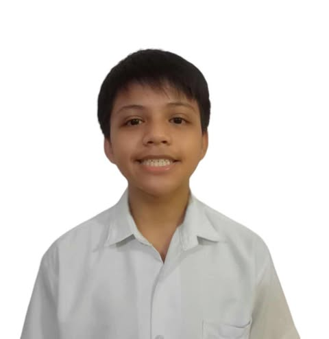

“100% Green”
An ad claims a product is perfectly safe for the earth, but doesn't actually explain how or why.
Ask: What does “green” actually mean?
When brands make products look more environmentally friendly than they really are. Learn how misleading green claims can influence what you buy and how to spot them.
We advocate for media and environmental awareness by helping people recognize and understand greenwashing. We aim to teach our audience how companies and organizations may use misleading environmental claims, advertisements, or information to appear more environmentally friendly than they actually are. Through our website, we encourage people to think critically, verify information, and make responsible choices that genuinely support the environment.
We envision a society of informed and responsible media users who can identify greenwashing, question misleading environmental claims, and make decisions based on truthful and reliable information. We hope to create a community where people value genuine environmental action rather than being influenced by misleading green marketing.
Our mission is to inform, engage, and empower people to identify and respond to greenwashing. We provide accessible information, practical strategies, and critical-thinking tools that help our audience evaluate environmental claims, verify sources, and make responsible decisions. Through our advocacy, we encourage people to think critically, act responsibly, and promote honesty and transparency in environmental communication.

Greenwashing happens when a business uses environmental messages, designs, or claims to make a product or company seem more eco-friendly than the available evidence supports.
Being media literate means looking beyond attractive environmental messages. Before believing or sharing a green claim, examine the claim, evidence, source, purpose, and context.
A green message may sound convincing, but one positive detail does not automatically describe the environmental impact of an entire product or company.


The problem isn't just using green logos or talking about saving the planet. The real issue is when an ad tricks you into thinking a product is way better for the earth than it actually is.
An ad claims a product is perfectly safe for the earth, but doesn't actually explain how or why.

A company brags about one small good thing they do while hiding a bunch of bad things. For example, a fast-food place might brag that they switched to paper straws, but completely ignore the fact that the entire cup is still made of unrecyclable plastic.

Using earth-toned colors and nature words just to make the product look clean and safe.
Greenwashing becomes easier to recognize when consumers slow down, question claims, and look for reliable information.
Check the company's environmental information.
Check product labels, certifications, evidence, and specific environmental claims.
Help other consumers recognize misleading marketing.
How misleading environmental claims spread online and how students can respond.
Greenwashing in social media can deceive people through false, exaggerated, or unsupported environmental claims used to promote products as environmentally friendly. Influencers can also contribute to this problem by recommending products and presenting them as eco-friendly without enough evidence, which can make audiences more likely to trust the claims.
This is especially important for students and young consumers who encounter environmental advertising and product recommendations regularly on digital platforms.
Examine digital advertisements carefully. Be cautious when an ad relies heavily on vague, “flowery,” or buzzword-heavy environmental language without providing specific evidence.
Learning about greenwashing can help people become more aware of misleading environmental marketing and encourage them to examine information more carefully. Critical thinking can help consumers evaluate advertisements, products, and the evidence behind environmental claims.
Social media can therefore be used not only as a source of information, but also as a place where consumers practice transparency, accountability, careful research, and responsible spending.
Don't accept an environmental claim simply because it appears in an attractive advertisement or comes from a familiar influencer. Pause, research the claim, check the evidence and certification, and consider whether the product's environmental benefits are actually explained and supported.
Think you can spot greenwashing? Choose the answer you think is correct.
Answer the questions and see how much you know about misleading environmental marketing.
The members of our group and their roles in the presentation.
Web Designer, Interactive Content Developer, Researcher
Researcher, Writer, Media Analyst
Researcher, Writer, Media Analyst
Media Analyst, Writer, Editor

Writer
Researcher, Writer, Media Analyst
Writer
European Commission. “Green claims.” European Commission. https://environment.ec.europa.eu/topics/circular-economy-topics/green-claims_en
Federal Trade Commission. “Environmental Claims: Summary of the Green Guides.” U.S. Federal Trade Commission. https://www.ftc.gov/business-guidance/resources/environmental-claims-summary-green-guides
Akepa. (2026, September 23). Greenwashing examples for 2025 & 2026: Products & brands. The Sustainable Agency. https://thesustainableagency.com/blog/greenwashing-examples/
Nazish, M., Khan, Z., Khan, A., Khan, M. N., & Ramkissoon, H. (2025). "Green intentions, green actions": The power of social media and the perils of greenwashing. Journal of Global Marketing, 38(3), 214–233. https://doi.org/10.1080/08911762.2024.2429517